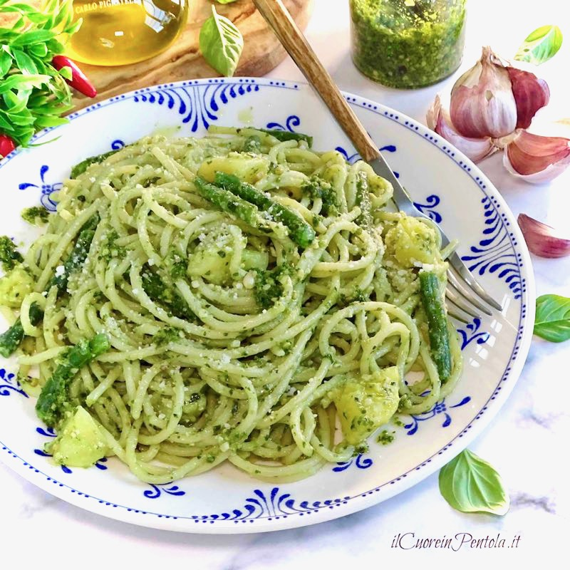

Pesto alla Genovese pasta Recipe

Description
Pesto alla Genovese is a famous Italian sauce originating from Genoa! Its main ingredients are basil, pine nuts, parmesan cheese, olive oil, and garlic.
Ingredients
- 100g basil leaves
- 100 g olive oil
- 1 clove of garlic
- 100g pine nuts
- 100g parmesan cheese, grated
- 500 g spaghetti
- Salt
- Pepper
Steps
- Place a frying pan over medium heat, add the pine nuts, and stir constantly with a wooden spoon, for 2-3 minutes, until the pine nuts are nicely golden and toasted.
- Remove the pan from the heat and set it aside to cool for 10 minutes.
- Put the olive oil, basil leaves, and garlic into a chopper blender, and beat them until completely mashed.
- Add the pine nuts, and beat again until they are crushed and incorporated into the mixture.
- Add the parmesan and pepper, beat for a few seconds until completely combined, and set the pesto aside.
- Place a pot over high heat, fill it ¾ full with water, and bring it to a boil.
- Add some salt and the pasta, and boil it according to the packet’s instructions.
- Remove the pot from the heat, drain the pasta, and reserve a little of the pasta water.
- Transfer the pasta back into the pot, add the pesto and, using a ladle, pour 1 ladleful of the pasta water.
- Mix until the pesto is completely combined with the spaghetti, and then divide the pasta among plates.
- Serve with basil leaves and freshly ground pepper.
Back to Recipes